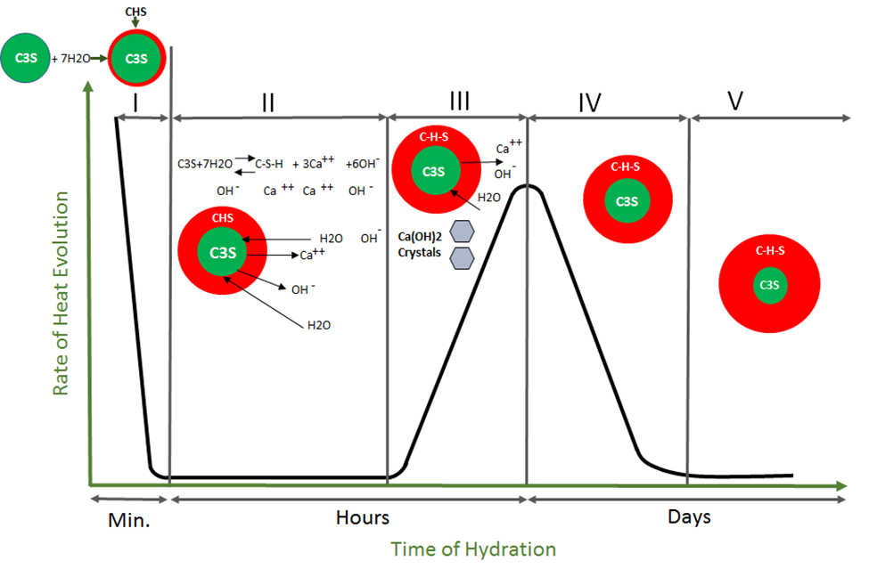

زودگیر کننده های بتن و انواع مختلف آنها
زودگیر کننده های بتن و انواع مختلف آنها
محصول حاصل از واکنش بتن، دارای ساختار کریستالی می باشد و سرعت این واکنش شکل های مختلفی از ساختار کریستالی را برای بخش سخت شده ژل سیمان ایجاد می کند که در استحکام نهائی بتن، مؤثر می باشد . هر چه سرعت واکنش هیدراتاسیون پائین باشد، کریستال های بتن دیرتر تشکیل شده ولی ساختار منظم تر و مستحکم تری دارند و بالعکس با افزایش سرعت واکنش هیدراتاسیون، بتن سریع سخت شده ولی ساختار کریستال ها بی نظم شده و این ساختار شکننده می باشد و بتن نهائی استحکام کمتری دارد.
عوامل مؤثر در سرعت واکنش هیدراتاسیون به شرح ذیل می باشد
1. غلظت بالاتر واکنشگرها که در این بحث سیمان می باشد، ارتباط مستقیم با سرعت واکنش دارد و لذا برای بتن های با عیار سیمان بالاتر، سرعت هیدراتاسیون بیشتر می باشد. در طرح های اختلاط با نسبت آب به سیمان کمتر، سرعت هیدراتاسیون به همین دلیل بالاتر می باشد.
2. دمای محیط واکنش ارتباط مستقیم با سرعت هیدراتاسیون دارد. در تابستان سرعت گیرش بالاتر بوده و در زمستان سرعت پائین تر است. دمای مصالح مصرفی نیز از همین قاعده پیروی می کند. ضمناً برای سازه های بتنی که ضخامت بتنی در آنها بیشتر می شود، گرمای حاصل از واکنش هیدراتاسیون سخت تر از ماتریس بتن خارج می شود و لذا باعث افزایش دمای درونی بتن شده و سرعت واکنش را افزایش می دهد.
3. تیپ سیمان، عامل مهم دیگری می باشد که در این واکنش نقش دارد. سرعت واکنش هیدراتاسیون با نسبت فاز تری کلسیم آلومینات و تری کلسیم سیلیکات سیمان رابطه مستقیم دارد و با فاز دی کلسیم سیلیکات رابطه عکس دارد. علاوه بر آن سیمان هایی که دانه بندی ریز تر و نرم تری دارند نیز در ساختار شیمیائی برابر، سرعت واکنش بالاتری دارند.
از آنجا که ساختار کریستالی بتن، نقش مهمی در مقاومت بتن و نهایتاً در دوام بتن دارد، لذا مدیریت سرعت این واکنش شیمیائی بسیار حائز اهمیت می باشد. به منظور این کار آئین نامه های ویژه بتن ریزی در هوای گرم و بتن ریزی در هوای سرد موجود می باشد که پیمانکاران ملزم به رعایت این آئین نامه ها می باشند.
مطابق آئین نامه بتن آمریکا، هوای سرد شرایطی است که طی سه روز متوالی متوسط دمای هوا کمتر از 5 درجه سانتیگراد باشد و طی این سه روز،هیچگاه دما بطور متوالی طی 12 ساعت بالای 10 درجه سانتیگراد نباشد.
معمولاً وقتی صحبت از بتن ریزی در سرما می شود، تصور بیشتر مردم بحث یخ زدگی بتن می باشد در صورتیکه با توجه به تعریف فوق این تصور می تواند غلط باشد و باید تمرکز خود را بر روی واکنش شیمیائی هیدراتاسیون قرار دهیم. این واکنش یک واکنش گرما زا می باشد یعنی طی پیشرفت واکنش گرما آزاد می شود. شروع واکنش نیاز به مقداری انرژی اولیه دارد که همان انرژی فعالسازی می باشد. چنانچه این مقدار انرژی، به حد لازم نرسد واکنش شروع نمی شود و لذا سخت شدگی سیمان اتفاق نمی افتد و در این حالت پس از مدتی، سنگدانه ها رسوب کرده و آب به سطح بتن می آید و عملاً بتن از حالت یکنواختی خارج می شود حال آنکه ممکن است که حتی یخ زدگی اتفاق نیافتد ولی همین جدایش باعث می شود کیفیت بتنی که با تاخیر به سختی می رسد از حالت همگنی خارج شود. لذا زمانی که هوا به سمت سرما میل می کند باید آئین نامه ها به دقت مطالعه شود.
استفاده حداقل 375 کیلوگرم سیمان در هر متر مکب بتن، نسبت آب به سیمان حداکثر 45%، عدم استفاده از سیمانهای پوزولانی و یا پوزولانها در طرح اختلاط و استفاده از مواد افزودنی شیمیائی زودگیر کننده، موارد توصیه ای می باشند که در آئین نامه ها نیز به چشم می خورد.
در بین توصیه هائی که برای بتن ریزی در سرما می شود، استفاده از مواد شیمیائی افزودنی، تحت عنوان زودگیر بتن به عنوان یکی از راهکارها، مورد توجه ویژه می باشد. زودگیرها، موادی می باشند که باعث افزایش سرعت واکنش هیدراتاسیون می شوند. بعضاً به غلط نام ضدیخ در خصوص این ترکیبات، در این صنعت رایج شده است.
ضدیخ ترکیبی می باشد که باعث کاهش دمای انجماد آب بتن می شود و یخ زدگی را به تاخیر می اندازد ولی الزاماً در سرعت واکنش، تغییری ایجاد نمی کند. معمولاً ضدیخ برای حفظ ملات یا بتن در دماهای زیر صفر استفاده می شود که پیش بینی می شود برای دوره معینی، حین یا بعد از بتن ریزی و قبل از گیرش بتن، دمای هوا به زیر صفر می رسد. بتن ریزی در آن شرایط قواعد خود را دارد که با موضوع این بحث متفاوت است ولی برای حفظ ملاتهای مصرفی در شرایط یخبندان، می توان از ضد یخ استفاده کرد.

اگرچه پایه شیمیائی هر دو دسته زودگیرها و ضدیخ ها معمولاً نمک های معدنی می باشند، ولی نمک هایی که بخش کاتیونی کلسیم دارند دارای نقش زودگیری می باشند. نمکهای کلسیم محلول در آب، شامل ترکیبات کلسیم نیترات، کلسیم کلراید، کلسیم فرمیات و کلسیم نیتریت می باشند که از بین این ترکیبات، کلسیم کلراید نقش زودگیر کنندگی بیشتری دارد ولی از آنجا که یون کلر در بتنهای مسلح باعث خوردگی آرماتور می شود، محدودیت هایی در میزان یون کلر این دسته از بتن ها بوده و لذا برای استفاده از این ترکیبات در بتن مسلح ممنوعیت هایی وجود دارد. اگرچه کنترل میزان کلر در حد قابل قبولی می تواند در بتن وجود داشته باشد و ایجاد مشکل نمی کند ولی اصل محافظه کاری ایجاب می کند که از ورود این ترکیب به بتن جلوگیری شود. کلسیم نیترات دیگر نمک کلسیم بوده که مصرف زیادی را به عنوان زودگیر در این صنعت دارد. این ترکیب علاوه بر زودگیری در بتن، خاصیت ضدیخ را نیز داشته، محافظت خوردگی میلگردها را نیز افزایش می دهد و استحکام نهائی بتن را بهبود می دهد.
استفاده از روان کننده ها و فوق روان کننده های زودگیر نیز در این صنعت رایج می باشد که این مواد برای شرایط هوای سرمای ملایم توصیه می شوند و در شرایطی که هوا سرد می شود، بهتر است که روان کننده و زودگیر به میزان لازم و تفکیک شده استفاده شود.
میزان مصرف زودگیر وابسته به دمای هوا و ضخامت بتن می باشد. با کاهش دما و ضخامت بتن، میزان زودگیر باید افزایش یابد. ضمناً زودگیر باید قبل از بتن ریزی به میکسر افزوده شود و به میزان لازم اختلاط صورت پذیرد و سپس بتن ریزی انجام گیرد ولی تاکید می شود که باید توجه داشت که استفاده زودگیر بتن در هوای سرد بعنوان یکی از کارهائی است که باید انجام داد و موارد دیگر نیز باید مطابق با آئین نامه رعایت شود.
محصولات مرتبط استرامیکس (شرکت بسپار بتن ایرانیان هوشمند):
Struset Nitro: ضد یخ بتن مسلح (زودگیر بتن فاقد یون کلرید)
Struset SPA: زودگیر شاتکریت (بتن پاششی) پودری غیر قلیایی به روش خشک با عملکرد بالا
Struset Nail: مایع زودگیر دوغاب های سیمانی تزریقی
بهترین مطالب هر ما
ارسال میشه به صندوق پستی شما!
این بالا کلیک کن و ایمیلت رو بنویس
ثبت